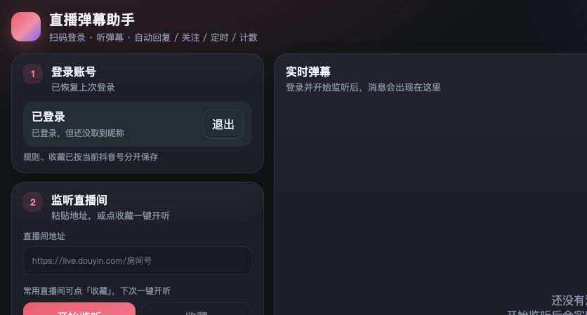
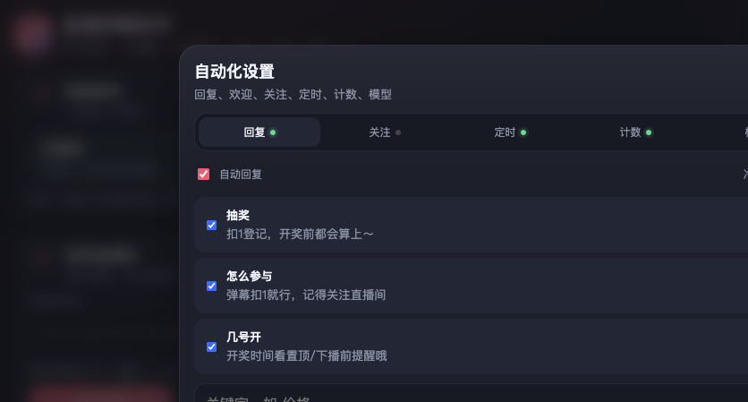
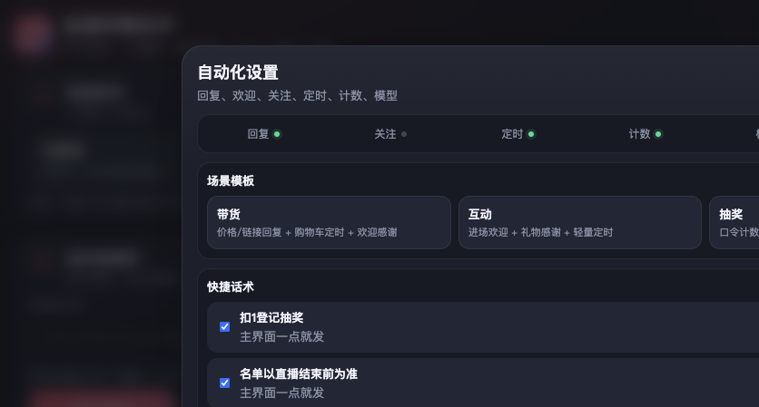
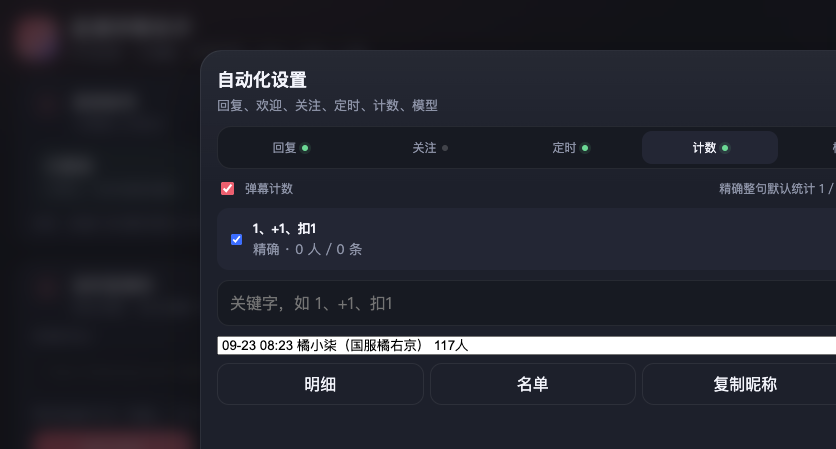

抖音扫码登录
用自己的抖音 App 扫码登录，主号、小号规则与收藏分开保存，扫码换号自动切换配置。
扫码登录，弹幕实时同屏；关键字自动回复（固定话术或大模型）、进场欢迎、礼物感谢、 定时弹幕、口令计数、本场简报——一个人管好一整场直播的公屏。

v1.1.0 起顶部新增「抖音 / 小红书」平台切换 Tab，登录态、规则、收藏、计数全部按平台分别保存。粘贴直播间 URL 时自动识别平台（xiaohongshu.com / live.douyin.com），收藏列表带平台色标，跨平台互不干扰。
十几项功能围绕一件事：让公屏互动不断线，让主播专心讲内容
用自己的抖音 App 扫码登录，主号、小号规则与收藏分开保存，扫码换号自动切换配置。
弹幕、礼物、进场消息同屏滚动，显示在线人数与贡献榜；常用直播间一键收藏，下次秒开。
命中关键字即回复：固定话术或多句随机轮换，支持 {昵称} 变量；也可交给大模型生成更自然的回答。
兼容 OpenAI /v1 接口，主流大模型都能接；密钥与规则仅存在本机 datas/ 目录，不上传云端。
新观众进场自动欢迎、收礼自动感谢，同一人一场只说一次，热情不重复、不刷屏。
观众发送指定口令自动关注对方，涨粉互动话术一体化，适合配合抽奖活动使用。
按间隔轮流发送定时内容维持热度；高频话术放进快捷栏，主界面一键发送。
所有自动回复先进队列，冷却中按优先级排队发出，避免短时间刷屏触发平台限制。
扣 1 等口令自动统计，名单一键导出、昵称一键复制；下播看简报，未命中词一目了然。
带货、互动、抽奖三套模板一键套用，再按自己的话术微调，五分钟配好一整场。
注册即赠 1 天试用；一账号绑定一台设备，到期后台续期，授权清晰、防盗用。
不同抖音号的回复策略、收藏列表、话术库相互独立，矩阵直播间的场控也能标准化。
以下均为软件实际运行截图（Windows），非渲染效果图



<video controls src="./screenshots/demo.mp4"></video> 或 B站 / 腾讯视频外链 iframe 即可。
选型先看实现路线：开箱即用的桌面工具、自己写脚本、还是整套无人直播方案
| 能力维度 | 直播弹幕助手（本产品） | 自建脚本（Python 自动化） | 无人直播 / 数字人系统 | AI 播报类工具 |
|---|---|---|---|---|
| 上手成本 | 下载 exe 双击运行，扫码即用 | 需自己开发并持续维护签名与页面结构 | 部署复杂，常需专用硬件 | SaaS 注册即用 |
| 账号登录 | 抖音 App 扫码，主号小号配置分开 | 模拟登录，易失效 | 各自方案不一 | 多为平台授权 |
| 弹幕监听 | 实时同屏：弹幕/礼物/进场 + 贡献榜 | 需自建链路 | 部分支持 | 仅用于触发播报 |
| 回复能力 | 固定话术 + 大模型双模式，{昵称} 变量、多句随机 | 全部自己写 | 问答库检索为主 | 固定模板播报 |
| 场控配套 | 完整：欢迎/感谢/关注/定时/排队/计数/简报 | 逐个功能自建 | 偏重画面生成，互动功能弱 | 基本没有 |
| 防刷屏设计 | 发送排队 + 冷却优先级 + 一场一次去重 | 需自行实现 | 不适用 | 不适用 |
| 数据与密钥 | 仅存本机 datas/ 目录，不上云 | 本机 | 各异 | 多存云端 |
| 适合谁 | 主播、场控、直播工作室、多号矩阵运营 | 有开发能力的团队 | 无人直播玩家 | 只要语音播报的场景 |
说明：以上对比基于各方案公开的技术路线整理，用于说明不同路线的能力边界，具体产品功能请以其官方说明为准。 如果你的核心诉求是「一个人管住整场公屏」——回复、欢迎、感谢、计数、复盘一体化，桌面端场控工具是投入产出比最高的路线。
到 Gitee / GitHub Releases 下载带版本号的安装包（如 LiveAssistant-v1.1.0.exe），双击运行，注册软件账号（新设备赠 1 天试用）。
用自己的抖音 App 扫码登录，粘贴直播间地址点「开始监听」，或从收藏一键开听。
右上角打开「自动化设置」：配关键字回复（固定话术或大模型）、欢迎感谢、定时与计数，也可先套用场景模板。
不是抖音官方产品。软件使用你自己的抖音账号扫码登录，只辅助你对自己有权操作的直播间做弹幕互动与场控。请遵守平台规则与当地法律，不要用于骚扰、刷量、违规引流或未授权采集他人数据。软件内置发送排队与冷却机制、同一人一场只欢迎/感谢一次，避免刷屏行为。
打开软件右上角的自动化设置，在回复页签中勾选自动回复，添加关键字与对应话术即可。每条规则支持固定话术或大模型生成，支持 {昵称} 变量与多句随机轮换；也可以直接套用带货、互动、抽奖三类场景模板快速开始。
软件兼容 OpenAI /v1 接口，填入接口地址与密钥即可接入主流大模型。密钥与全部规则配置仅保存在本机 exe 同目录的 datas/ 文件夹中，不上传云端。
支持。主号与小号的回复规则、直播间收藏相互独立保存，扫码切换抖音账号后自动加载对应配置，适合一个团队同时运营多个直播间的场景。
弹幕计数自动统计扣 1 等口令人数，可导出明细名单、复制昵称，抽奖与活动核销直接用；本场简报汇总本场数据并提示未命中关键词，方便下播后复盘和补充回复规则。
软件账号与设备一一绑定，一个软件账号绑定一台电脑，新设备首次注册赠送 1 天试用；到期后联系管理员在后台续期即可，抖音账号扫码切换不受限制。
直播间的公屏是转化和留存的主战场。观众问价格没人答、进场没人欢迎、中奖口令数不清，这些细节叠加起来，直接决定观众停留时长和下单意愿。但主播分身乏术是常态：一边讲品、一边盯公屏，几乎不可能两头兼顾。抖音直播间自动回复工具解决的就是这个问题——把高频、标准化的公屏互动交给软件，让人专注内容和转化。
固定话术适合答案唯一的问题：价格、发货时间、活动规则，答得准、快、稳，配合 {昵称} 变量和多句随机，重复感也能压下去。大模型回复适合开放性问题：观众换个说法问「这个适合油皮吗」，关键词规则就接不住了，语义理解才能接住。直播弹幕助手把两种模式做在同一个规则里，答案确定的问题走固定话术，长尾问题交给大模型，成本和效果都不浪费。
很多人忽略这一点：自动回复本身也可能成为风险源。短时间高频发送、欢迎语重复轰炸，比不回复更容易被平台判定异常。直播弹幕助手内置发送排队机制——所有自动回复先进队列，冷却中按优先级依次发出，同一人的欢迎和感谢一场只说一次。自动化要做的不是「说得越多越好」，而是「像人一样有节制地说」。
大模型接口的密钥、回复规则、直播间收藏，全部保存在本机 exe 同目录的 datas/ 文件夹，不上传任何云端。对于把直播间当生意的团队来说，话术库和运营数据不出内网，是选型时最容易被忽略、也最重要的底线之一。
下载 Windows 安装包，双击运行，注册即赠 1 天试用。当前版本 v1.1.0，国内用户优先从 Gitee 下载。
新设备首次注册赠 1 天试用，正式版按设备授权，到期联系管理员续期
试用：新设备首次注册赠送 1 天试用，功能与正式版完全一致，先跑通再决定。
授权方式：一个软件账号绑定一台电脑；到期后由管理员在后台续期，软件与全部配置无需重装。
多账号：抖音账号可自由扫码切换，主号小号规则与收藏分开保存，不按抖音号数量另收费。
购买 / 续期 / 批量授权 / 功能定制：微信扫码添加管理员，备注「弹幕助手」，说明直播间数量和使用场景，会推荐合适的套餐。
工作时间一般几分钟内回复。软件内也有同样的联系方式：登录页与「自动化设置 → 更多」页签均可扫码。
 微信扫码 · 添加管理员
购买套餐 / 授权续期 / 批量开通 / 功能定制
微信扫码 · 添加管理员
购买套餐 / 授权续期 / 批量开通 / 功能定制